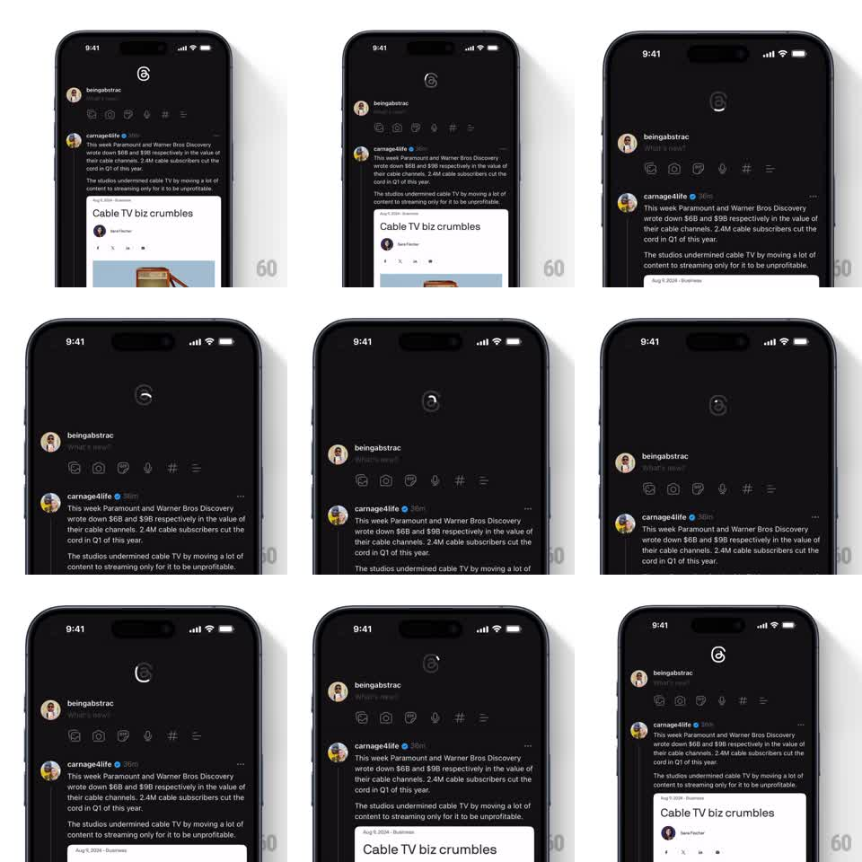

Media
Frame-by-frame

Rebuild this interaction 1:1: Threads' pull-to-refresh - pulling the feed down draws the Threads logo stroke by stroke in proportion to pull depth, then spins it into a refresh on release.

Rebuild this interaction 1:1: Threads' pull-to-refresh - pulling the feed down draws the Threads logo stroke by stroke in proportion to pull depth, then spins it into a refresh on release. ## Integration Integration: stack-agnostic spec - springs given as stiffness/damping, timed motions as duration + curve; map every value to your framework and animation library of choice. ## Scene The dark Threads feed (composer row on top, posts below). Pulling down reveals the Threads logo at the top of the feed - a single stroke that draws itself as you pull, then becomes a loading spinner while content refreshes. ## Motion spec Pattern: scroll-driven stroke draw + release spinner. - Pull down: the feed translates with the finger at ~0.6x drag (resistance), and the logo stroke draws proportionally - stroke end offset maps 1:1 to pull distance from 0 to the ~80px trigger point. - Overshoot past the trigger: the stroke completes and the logo scales up slightly (1.0 to 1.08, 150ms) as a "locked" cue. - Release past the trigger: the logo spins (rotate 360deg, 700ms, linear, repeating) while the feed settles back to rest under a spring (stiffness ~260, damping ~26); the refresh resolves and the spinner collapses (scale to 0, 200ms). - Release before the trigger: the stroke undraws as the feed springs back - the draw is fully reversible until committed. - Content arrival: new posts slide in from the top (250ms, ease-out). ## Calibration - The draw tracks the finger with zero lag; any smoothing delay makes it feel disconnected. - The trigger point is where the stroke exactly completes - pull distance and path length must be tuned together. ## Reduced motion Spinner without stroke draw or spin; feed snaps back. ## Don't miss - The logo is the actual Threads "@" glyph outline - recognizably drawn, not a generic ring. - The feed content stays visible during the pull; the logo reveals in the gap created above it.